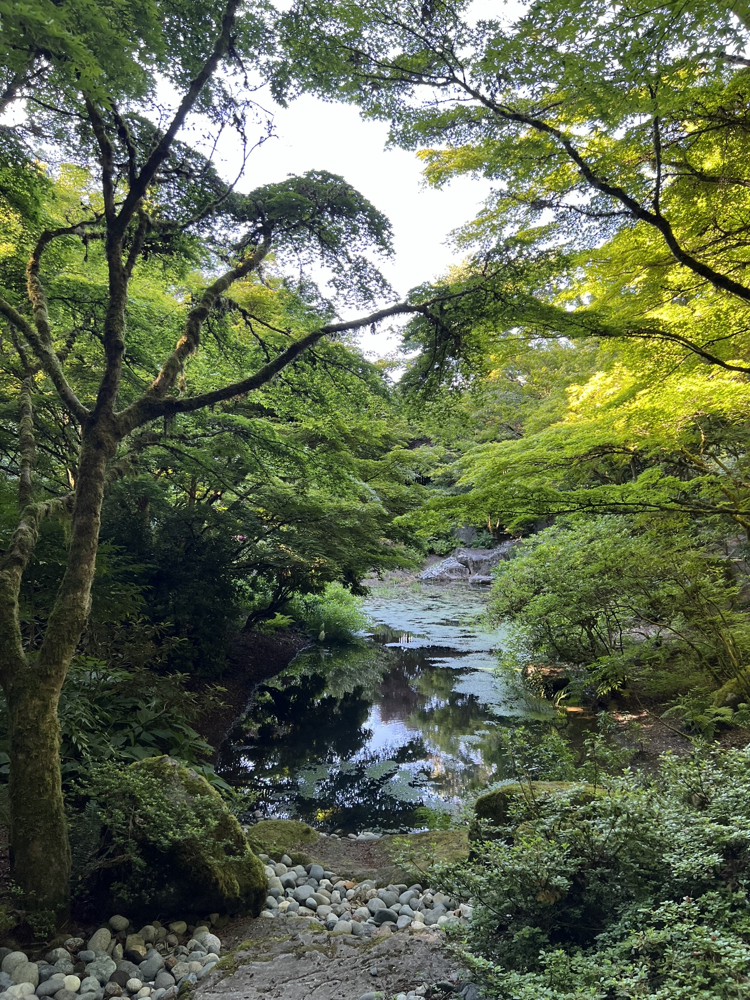

Popular Attractions

Downtown Park
A green space located in the center of Downtown Bellevue. Surrounded by high-rise buildings, it
offers people a chance to escape the chaos of the city. The park includes open grass areas,
walking path, playground, and a garden. Trees provide shade in during the summer, perfect for
picnics. The park has scenic views of surrounding buildings and sits conveniently close to local
shops and restaurants. which is great for picnicking, catching up with friends or hosting
outdoor events.
Learn more

Larsen Lake Blueberry Farm
A park located in Bellevue with open space and fields, which offer a scenic views of wetlands
and wildlife. During blueberry season, people are allowed to pick blueberries. There are also
trails surrounding the lake, good for runs. Larsen Lake Blueberry Farm has an open, rural
environment. Families love visiting this farm to relax and take in some fresh air.
Learn more

Bellevue Botanical Garden
A peaceful urban botanical garden that features diverse plant collections, themed gardens, and a
light garden during Christmas season. Wander through quiet walking trails, wetlands and past the
suspension bridge. Find plants blooming year-round.
Learn more

Newcastle Beach Park
Located on the shores of Lake Washington. This park offers a great view of the lake. There are
walking paths and grass area, perfect for a picnic or a stroll. There is also a small sandy
beach. Newcastle Beach Park is especially nice during the summer, people tend to go to swim and
sunbathe on the beach.
Learn more